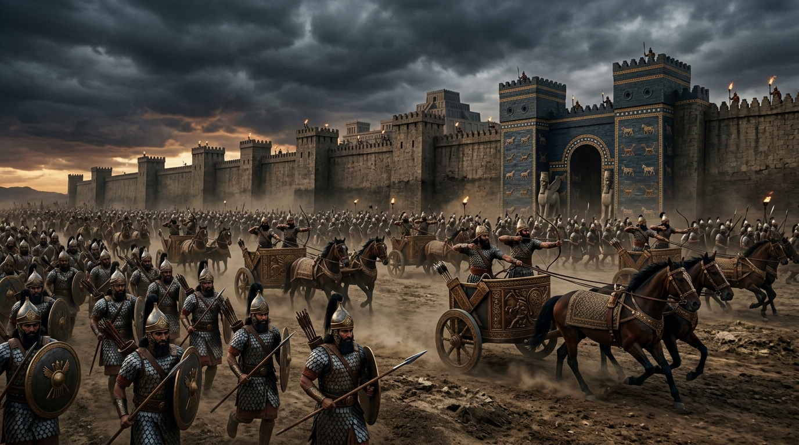

A Máquina de Guerra, Nínive e o Juízo Divino
Para compreender o impacto do Império Assírio na narrativa bíblica, é necessário visualizar uma força militar de proporções quase apocalípticas para o mundo antigo. Nascido nas planícies do norte da Mesopotâmia, às margens do rio Tigre, o Império Assírio não foi apenas um reino expansionista, mas uma máquina de guerra meticulosamente desenhada para inspirar terror absoluto.
Com sua imponente capital em Nínive, a Assíria revolucionou a guerra na antiguidade. Eles introduziram o uso combinado de cavalaria, carros de guerra encouraçados e engenharia de cerco avançada (com torres móveis e aríetes). Mais do que sua destreza tática, os assírios utilizavam a crueldade como política de Estado: esfolamentos públicos, empalações e o exílio forçado de populações inteiras eram métodos sistemáticos para sufocar qualquer fagulha de rebelião. Na teologia dos profetas, especialmente em Isaías (10:5), a Assíria é tragicamente descrita como "a vara da ira de Deus" — um instrumento pagão convocado pelo Senhor para disciplinar a obstinada nação de Israel.
Índice do Estudo:
- 1. Nínive e a Paradoxal Misericórdia de Deus (O Livro de Jonas)
- 2. A Política de Deportação e o Fim do Reino do Norte (722 a.C.)
- 3. O Cerco a Jerusalém: O Orgulho Humano e a Intervenção Celestial
- 4. O Declínio e a Justiça Retributiva (612 a.C.)
- 5. Tabela de Resumo e Aplicação Prática
1. Nínive e a Paradoxal Misericórdia de Deus (O Livro de Jonas)
Antes de ser o carrasco histórico do Reino do Norte, Nínive foi o palco de uma das demonstrações mais contundentes da graça universal de Deus. O livro de Jonas não é apenas a narrativa de um homem engolido por um grande peixe; é um profundo tratado sobre o nacionalismo tóxico contrapondo-se ao amor de Deus pelos gentios.
A fuga inicial de Jonas para Társis não foi motivada por medo físico dos assírios, mas por uma certeza teológica sombria: ele sabia que se pregasse o arrependimento, Deus os perdoaria. Para um israelita patriota, a ideia de Deus poupar a sanguinária Nínive era repulsiva. No entanto, quando Jonas finalmente percorre as ruas proclamando a destruição iminente em quarenta dias, ocorre um dos maiores avivamentos do Antigo Testamento. Do rei ao plebeu, a cidade se veste de pano de saco. O cancelamento do juízo sobre Nínive revela que o coração de Deus não está restrito a fronteiras étnicas; Seu caráter misericordioso sempre busca a redenção onde há um quebrantamento genuíno.
2. A Política de Deportação e o Fim do Reino do Norte (722 a.C.)
O arrependimento da geração de Jonas, contudo, foi passageiro. Nos séculos seguintes, a Assíria voltou-se agressivamente para a região do Levante, atraída pela riqueza comercial da Via Maris e pelas rotas que ligavam ao Egito. Sob o comando de monarcas brutais como Tiglate-Pileser III, Salmaneser V e Sargão II, a Assíria apertou o cerco sobre Israel.
O Reino do Norte, liderado por uma monarquia moralmente falida e mergulhado na adoração aos deuses de Canaã, ignorou as repetidas advertências dos profetas Amós e Oseias. Em 722 a.C., a tragédia anunciada consumou-se: a capital Samaria foi invadida após um longo e agonizante cerco. Para evitar futuras rebeliões, os assírios aplicaram sua infame engenharia demográfica: deportaram os israelitas para regiões distantes da Média e Mesopotâmia e repovoaram Canaã com estrangeiros. Essa mistura forçada de povos e religiões deu origem aos samaritanos, e selou o desaparecimento histórico das chamadas "Dez Tribos Perdidas". Israel colheu o amargo fruto de sua aliança com a idolatria.
3. O Cerco a Jerusalém: O Orgulho Humano e a Intervenção Celestial
Com o Reino do Norte varrido do mapa, a máquina de guerra assíria voltou seus olhos gananciosos para o Reino do Sul, Judá. O ápice desse terror ocorreu durante o reinado do piedoso rei Ezequias (701 a.C.), quando o imperador Senaqueribe marchou contra Jerusalém. Após devastar as cidades fortificadas de Judá (como Laquis), Senaqueribe sitiou a capital e enviou Rabsaqué, seu porta-voz, para proferir uma guerra psicológica devastadora nos muros da cidade.
Os emissários assírios não apenas exigiram rendição, mas cometeram o erro fatal de blasfemar contra Yahweh, igualando o Deus Vivo às estátuas de madeira dos povos já conquistados. Ezequias, em um ato de profunda humildade, levou a carta de ameaça ao Templo e a estendeu diante do Senhor. A resposta divina, comunicada pelo profeta Isaías, foi fulminante. Em uma única noite, sem que uma só flecha fosse disparada por Judá, o Anjo do Senhor desceu sobre o acampamento inimigo, abatendo 185 mil soldados assírios. Senaqueribe fugiu humilhado para Nínive, onde, cumprindo a profecia, foi assassinado por seus próprios filhos enquanto cultuava seu falso deus, Nisroque.
4. O Declínio e a Justiça Retributiva (612 a.C.)
A Bíblia ensina que o orgulho precede a ruína, e a Assíria não foi exceção. A violência que eles exportaram para o mundo inevitavelmente retornou aos seus próprios portões. Os profetas Naum e Sofonias registraram oráculos vívidos sobre a queda iminente da outrora invencível Nínive.
A crueldade assíria havia plantado o ódio em todos os povos subjugados. Em 612 a.C., uma coalizão vingativa liderada pelos Babilônios e pelos Medos sitiou e incendiou Nínive de forma tão completa que a cidade foi engolida pelas areias e esquecida pela história durante milênios, até ser redescoberta por arqueólogos no século XIX. A aniquilação da Assíria permaneceu como um lembrete perpétuo na teologia bíblica: não importa quão formidável seja o império humano ou sua tecnologia militar, a justiça do Criador terá sempre a última palavra.
5. Tabela de Resumo e Aplicação Prática
| Elemento Histórico | Significado Teológico | Sombra do Redentor (Cristo) |
|---|---|---|
| Nínive | O centro do terror que provou a misericórdia de Deus. | A oferta de arrependimento disponível a todos os povos. |
| Vara da Ira | O uso de um império maligno para disciplinar Israel. | Deus soberano sobre as nações e instrumentos de correção. |
| Cerco a Jerusalém | A intervenção sobrenatural contra a blasfêmia. | Jesus, o refúgio inabalável contra o inimigo. |
💡 Aplicação Prática: O que aprendemos hoje?
O estudo do Império Assírio nos confronta com a soberania de Deus sobre a história. Frequentemente nos sentimos assustados com o poder de entidades, impérios ou crises que parecem invencíveis. Como os habitantes de Jerusalém cercados pelas tropas de Senaqueribe, podemos sentir que não há saída. Mas a Assíria nos lembra de que até os "maiores impérios do mundo" são apenas ferramentas nas mãos do Senhor.
A lição espiritual mais profunda aqui é o equilíbrio entre a justiça e a misericórdia. Deus não tolerou a idolatria e a injustiça da Assíria, mas deu espaço para o arrependimento (como em Nínive). O orgulho humano, que busca se exaltar acima de Deus, sempre caminha para a própria destruição. Nosso desafio diário é reconhecer que não somos os donos do nosso destino; nossa segurança não está em muralhas fortificadas, mas em depositar nossa causa, como fez Ezequias, diante da presença do Deus Vivo.
Continue sua jornada:
- Voltar ⬅️ Ver todos os impérios
- Temas 📚 Ver todos os estudos
Apoie este projeto 🌱
Se este estudo foi útil, considere apoiar a manutenção do site.
Chave PIX (Celular):
marcosmontanaria@gmail.com